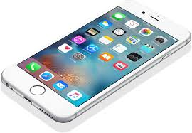
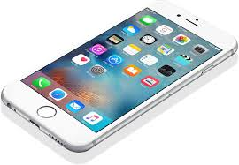

Welcome::Where to buy cell phones online
Mobile Phones have become part of people lives as much as we hate to admit it. With the growth of Social Media and a huge amount of the world’s population using it, we can now get breaking news as it happens, even before it hits the newspapers or the evening TV news. We now have smartphones like the infinix zero 3 and samsung galaxy s7 that are able to get us information at the touch of a button whether you are at school, in the office or at home while at the same time keeping you in touch with friends and family via your social media networks or replying to work e-mails on the go. Weigh the Pros and Cons of each mobile in order to choose the ideal mobile phone to suite your needs and you would have every reason why you should buy a phone, whether for business or personal use. Jumia has the latest phone in Nigeria that includes infinix Zero, Tecno Phantom 6, Infinix Hot 4,Galaxy S6 mobile phones in Kenya and more as well as all other phone accessories you may need.Our online store guarantees best prices of phones in Kenya.


 
